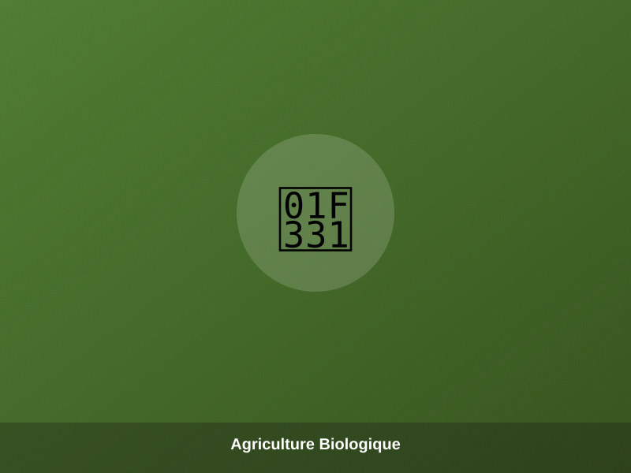
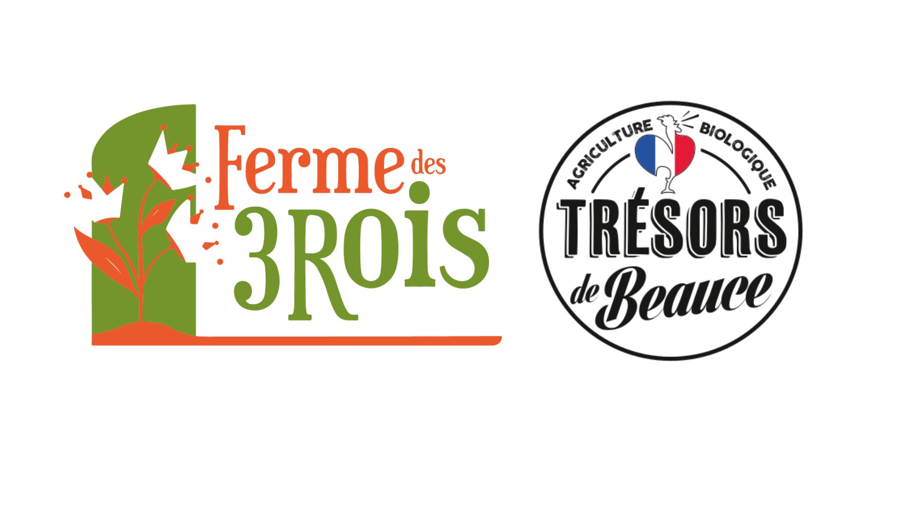
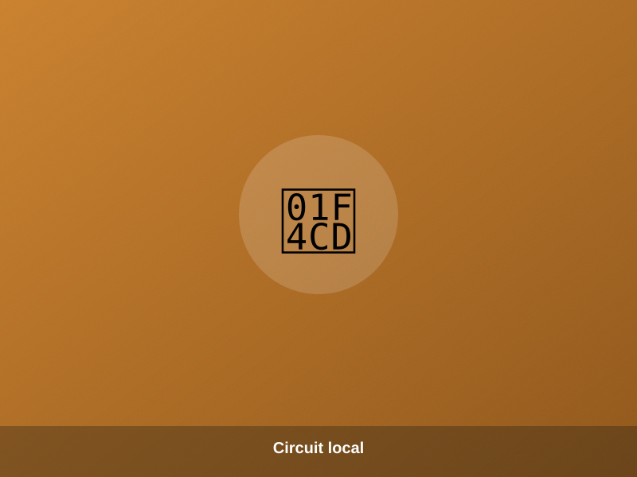
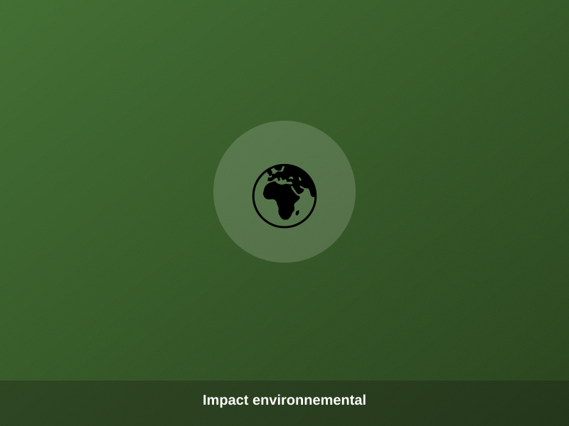
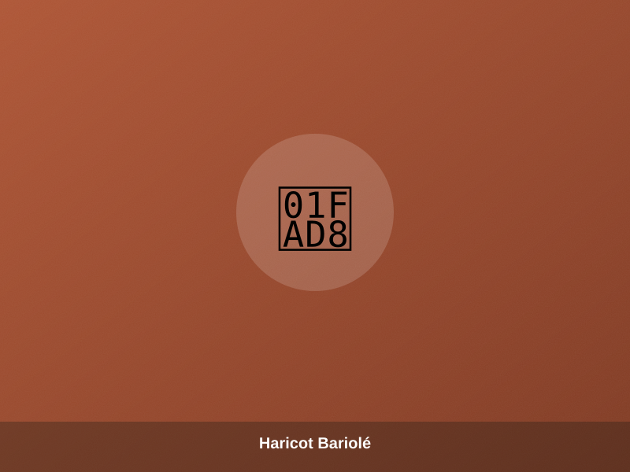

Bio & certifications
100% de notre exploitation est certifiée Agriculture Biologique (FR-BIO-01). Nous sommes également reconnus « Artisans Militants de la Qualité » et « C du Centre — Produit en région ».

La Ferme des 3 Rois cultive et transforme, au cœur de la Beauce, des céréales, légumineuses, graines et légumes 100% biologiques — pour les professionnels comme pour les gourmands.
Le groupe familial Ferme des 3 Rois commercialise ses productions sous deux marques :
Ferme des 3 Rois — vrac & professionnels Trésors de Beauce — épicerie & particuliers
Entreprise familiale depuis 6 générations, la Ferme des 3 Rois est une exploitation de 142 hectares située au Puiset, en plein cœur de la Beauce (Centre-Val de Loire). Jérémy et Jonathan Desforges ont repris les terres céréalières de leur père Jean-Louis en 2018 et entrepris, dès 2020, la conversion en agriculture biologique de toute l'exploitation.
La ferme produit aujourd'hui des légumes secs, des plantes potagères, des céréales, des légumes et des graines de tournesol bio, dans le plus grand respect des terres. Tous ces produits sont commercialisés sous la marque Trésors de Beauce, pour les particuliers, et en direct pour les professionnels sous le nom Ferme des 3 Rois.
« Depuis 6 générations, à la Ferme des 3 Rois, nous perpétuons le travail de la terre avec passion et amour. Nous cultivons nos céréales, graines et légumineuses en 100% biologique afin de respecter l'environnement et notre terre. »
— Jérémy & Jonathan, agriculteursCertifications, agriculture durable, circuit local et impact environnemental : découvrez les piliers de notre engagement paysan.

100% de notre exploitation est certifiée Agriculture Biologique (FR-BIO-01). Nous sommes également reconnus « Artisans Militants de la Qualité » et « C du Centre — Produit en région ».

Rotation des cultures, fertilisation naturelle, préservation des sols et de la biodiversité : une haute technicité bio pensée pour durer.

Notre transformation est réalisée à la ferme, sur une chaîne de tri de pointe, puis vendue en circuit court en Eure-et-Loir, en région Centre et en Île-de-France.

Emballages 100% home-compostables ou recyclables, transport limité au local : nous réduisons notre empreinte à chaque étape.
Cultivés puis conditionnés sur notre exploitation du Puiset, nos produits bio « 100% Origine Beauce » s'invitent aussi bien dans les cuisines professionnelles que familiales. Disponibles en sachet 400g, en sac de 1 à 5kg, en bocal, ou en vrac 10kg pour les professionnels.
 ⏱ 15 min
⏱ 15 minCéréale ancienne au goût subtil de noisette, idéale en risotto ou en salade tiède.
 ⏱ 60 min
⏱ 60 minRiche et rustique, parfait en accompagnement ou en soupe paysanne.
 ⏱ 15 min
⏱ 15 minRiche en protéines, cuisson rapide, pour salades et bols gourmands.
 ⏱ 15 min
⏱ 15 minBlé concassé à la cuisson express, base idéale du taboulé maison.
 ⏱ à l'éclatement
⏱ à l'éclatementÀ éclater en casserole ou au micro-ondes, pour un apéro 100% naturel.
Haricots
 ⏱ 30 min
⏱ 30 minFin et fondant, le classique du gigot d'agneau.
 ⏱ 30 min
⏱ 30 minCharnu et généreux, parfait en chili ou en salade composée.

⏱ 30 minVariété rustique à la texture fondante, façon fagioli italien.
 ⏱ 30 min
⏱ 30 minPetit haricot blanc tendre, idéal en cassoulet.
 ⏱ 30 min
⏱ 30 minLe grand classique des plats mijotés du dimanche.
 ⏱ 30 min
⏱ 30 minTexture crémeuse, parfait pour les cuisines du monde.
Lentilles
 ⏱ 20 min
⏱ 20 minStyle « Le Puy », ferme sous la dent, riche en fibres.
 ⏱ 15-30 min
⏱ 15-30 minDouce et fondante, pour des plats tout en délicatesse.
 ⏱ 5-10 min
⏱ 5-10 minCuisson minute, se délite pour dahls et veloutés.
 ⏱ 20 min
⏱ 20 minPetite et noire, un caviar végétal pour vos salades chics.
Pois
 ⏱ 30 min
⏱ 30 minPour houmous, couscous ou simplement « au naturel » en bocal.
 ⏱ 30-60 min
⏱ 30-60 minLe secret des purées et soupes réconfortantes d'hiver.
Nature, salé ou torréfié au piment d'Espelette — croquant à l'apéro comme en topping.

À saupoudrer sur salades, yaourts ou porridges pour un boost d'oméga-3.

Saveur plus prononcée, parfaite en pain maison.

La star des puddings et des petits-déjeuners healthy.
Aux côtés de nos légumes secs, nous cultivons des légumes de plein champ en agriculture biologique, disponibles selon la saison.

Cultivées sur nos terres beauceronnes, disponibles à l'automne et en hiver.

Doux et parfumés, récoltés en fin d'été.

Variétés de saison, idéales pour les veloutés d'automne.

Crues, cuites ou en jus, un légume racine plein de caractère.

Casserole, cocotte-minute, four ou micro-ondes : retrouvez en un coup d'œil le temps de cuisson idéal pour chacun de nos produits (pois, haricots, lentilles, céréales...).
Télécharger la fiche cuisson (PDF)
Petit épeautre, échalote, vin blanc et crottin de chèvre fondu : un risotto paysan et réconfortant.
Télécharger (PDF)
Fraîche et colorée, relevée d'agrumes et d'herbes du jardin.

Un plat généreux et épicé, pensé pour les grandes tablées.

Graines de chia, lait de coco, miel, mangue et yaourt grec : un dessert healthy et gourmand.
Télécharger (PDF)
Un petit-déjeuner réconfortant à base de céréales de la ferme.

Croustillants à l'extérieur, moelleux à l'intérieur, avec nos graines de lin doré.
Liste de points de vente à titre d'exemple — à personnaliser avec vos revendeurs réels.